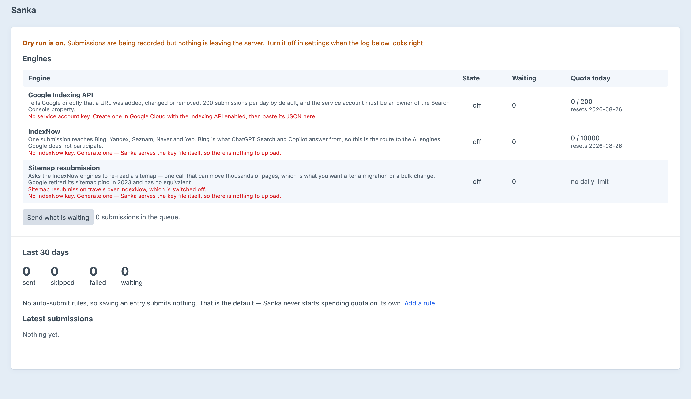

Indexing, but instant.
Push URLs to Google and IndexNow the moment they change — then find out which AI engines actually read them.
Every save, delete and unpublish becomes the right kind of notification, to the engines you chose, for the sections you chose — queued in the background so nobody waits on Google.
Google has its own API. Bing, Yandex, Seznam, Naver and Yep share one between them.
Two hundred submissions a day. Spending them by accident is the normal failure mode.
An author saving twenty times while they edit spends one submission, not twenty.
“Skipped” is an outcome with a reason on it, never a silent drop. Why didn’t it send my page? always has an answer on the screen.
A user agent takes one line of curl to forge, so a visit is a claim until reverse DNS confirms it. Genuine, forged and unverifiable are three different answers.
Twenty deterministic checks against the page’s own HTML. Nothing is sent anywhere, nothing is judged by a model, and every finding that is not a pass carries the fix.
Google's Indexing API, IndexNow and sitemap resubmission, with quota left today.
